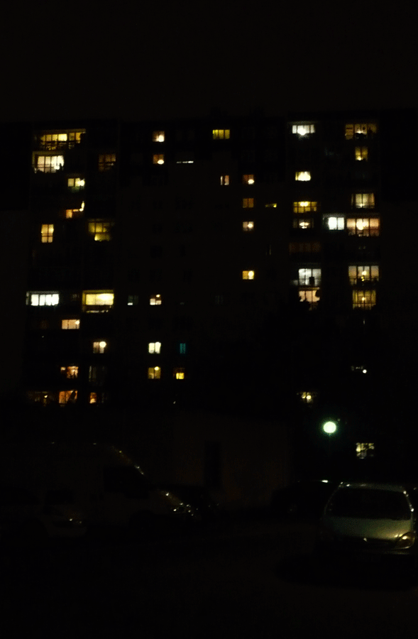
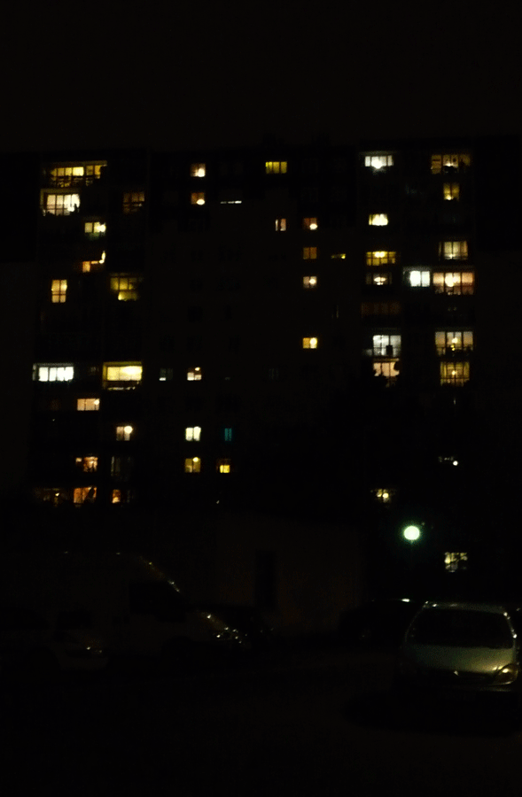
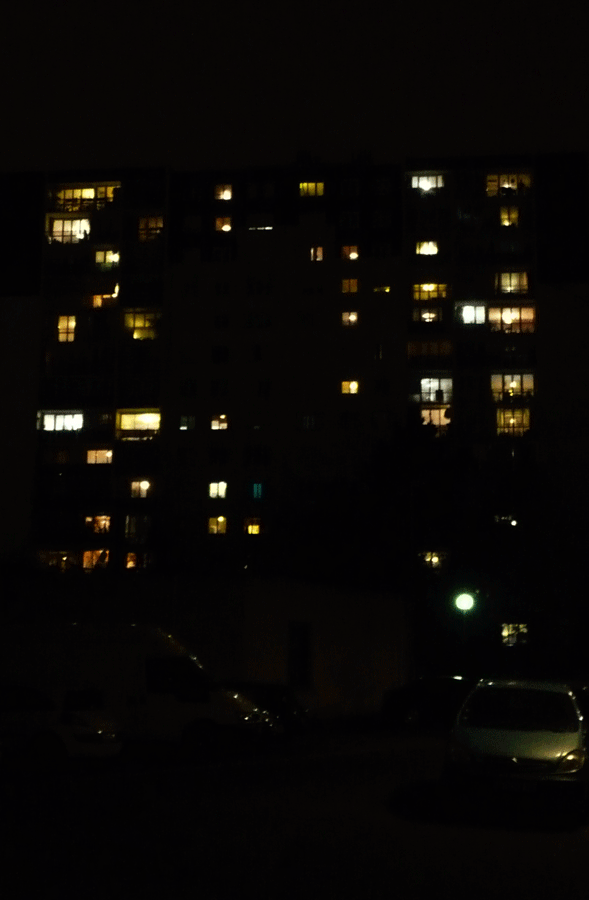
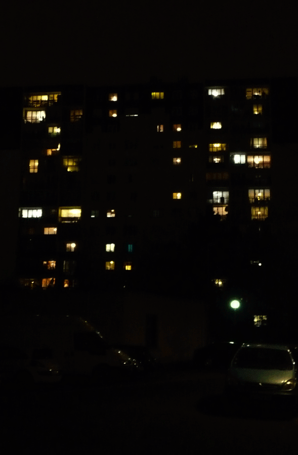

Étudiante en graphisme ce que je préfère ce sont les travaux collectifs, réfléchir et créer pour de projets solidaires et éthiques, je défends l'idée qu'il est essentiel de pouvoir échanger et confronter ses propositions créatives pour nourrir un travail. L'illustration est une part importante de mon travail c'est un réel outil qui m'aide à communiquer.
Une charte graphique qui se dessine à travers un système modulable, le logo est composé de formes géométriques faisant référence à celles qui composent l’architecture du cinéma. Un système graphique déclinable sur différents supports (tickets, signalétique, motif). Un travail d’affiches qui jouent sur les sens stimulés par le cinéma. Enfin la conception d’un programme jeunesse, le format, la composition et la sélection des films sont adaptés à un jeune public.
En tant que femme et étudiante en graphisme, j’ai une réelle volontée de déconstruire les tabous et de plaider l’émancipation des femmes. Lutter contre la pression qu’exerce la société sur le corps féminin, l’idéalisation, l’interprétation et le jugement auquel il est soumis. En effet, les conséquences peuvent êtres désastreuses chez les plus jeunes, notamment lors du passage à la puberté. Ma réponse à ces problématiques a été de répendre au travers d’une campagne institutionelle, de nouveaux modèles diversifiés, des corps sans tabou ni idéalisation. Une guerilla qui investit les rues de Paris et qui a long terme, provequera un éveil des consciences, entrainera des discussions plus libérées autour du corps et peutêtre redonnera confiance aux femmes.
Création d’une édition à partir de photographies de nuit composée avec la typographie Cooper Std Black. Je photographie ma ville en la faisant intéragir avec un texte de rap, qui rend hommage au « 95 ». Je voulais rendre compte de l’atmosphère mystérieuse et puissante dont fait références M-Group. Le résultat est une édition sans reliure qui nous incite à la lire comme un journal. J’ai également joué sur un contraste entre une police de caractère symbolique des années 60/70 et des photographies de la banlieue d’aujourd’hui.
À partir de l’écoute d’un oral de Gilles Deleuze autour du concept de déterritorialisation, j’ai retranscrit typographiquement mon interprétation de cette écoute. J’ai expérimenté un nouveau support de communication : la rue, j’ai alors placé mes affiches typographiques dans différents territoires afin de rendre ce discours universel et à la portée de tous.


 



 
